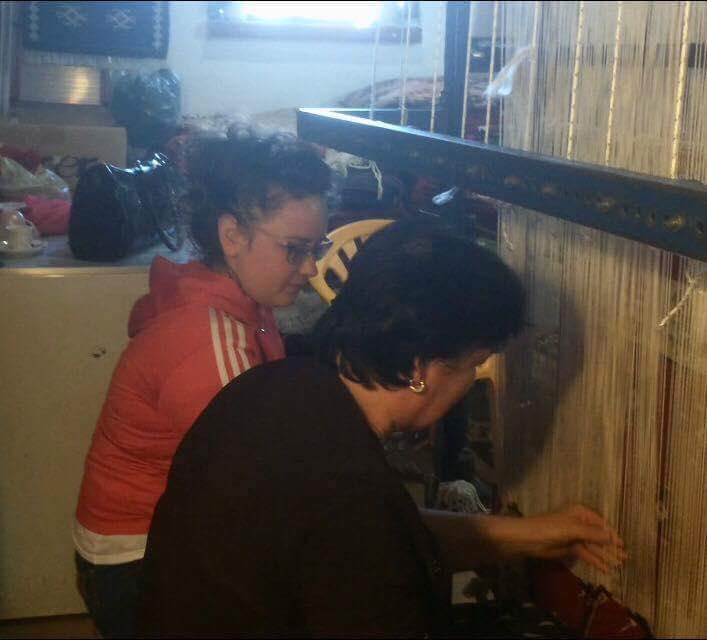
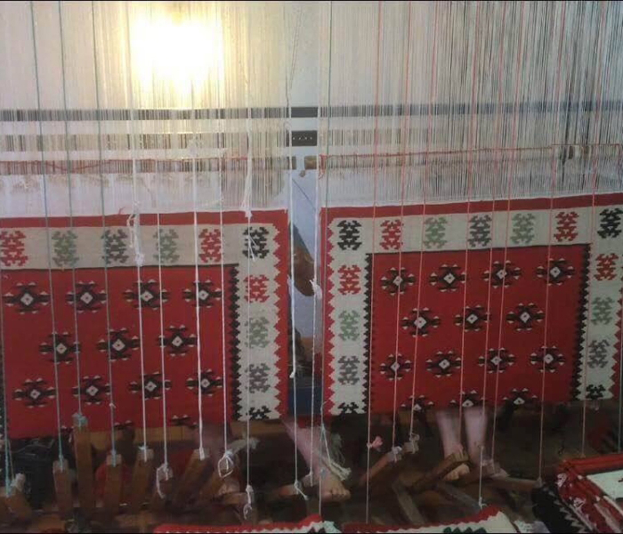

Janë historitë e disa tezgjahisteve krutane që kanë nisur të punojnë në tezgjah që fëmijë. Edhe nëse nuk donin, do të qëndronin pranë nënave për të marrë zanatin. Sot, vajzat e tyre kanë zërin për të kundërshtuar! E kanë mësuar tezgjahun, por nuk duan ta kalojnë jetën duke thurur qilima, sepse as tregu nuk e justifikon punën. Një nga traditat identifikuese të Krujës, ca vite më vonë, do të humbasë! Vjollca, Naimja, Romina tregojnë arsyet! “Nuk do të ndihem krenare për vajzën time, siç u ndie nëna ime për mua, kur trashëgova dhe vazhdova zanatin e saj”, thotë me keqardhje Vjollca Haxhia, një nga qilimpunueset e qytetit të Krujës, teksa thur rombin e verdhë në qilimin që po punon. Tezgjahistja 50-vjeçare e ushtron këtë zanat që prej moshës 12-vjeçare, ndaj edhe është e lidhur shpirtërisht me të dhe punimet e saj artizanale.
E ndërsa Vjollca këmbëngul që ky është një zanat që duhet trashëguar, pak metra më poshtë në një dyqan tjetër, dy zonja që punojnë në të njëjtin tezgjah nuk ndajnë të njëjtin mendim me të. Sulltane Mezini thotë se e bija e ka mësuar zanatin, por është vetë ajo që nuk e nxit për ta vazhduar, pasi tashmë ky zanat nuk ka fitimet e duhura. “Si zanat është shumë i bukur dhe vajza ime e ka mësuar, por nuk dua që ta vazhdojë sepse nuk ka rendiment dhe fitimet janë të pakta. Shkurt nuk ka lekë”. Njëzëri me të pohon edhe Naime Kuni, që siç tregon ka gjithë jetën që e ushtron zanatin dhe se do të vazhdojë me po të njëjtin pasion.
“Brezi ynë do ta vazhdojë sa të ketë mundësi, por të rinjtë jo. Puna e dorës tani shihet si diçka primitive, nuk vlerësohet si dikur”, thotë ajo dhe shkëmben me shpejtësi turrën e leshit mes fijeve të tezgjahut. Dilema e lënies pas dore apo vazhdimit të zanatit dhe njëkohësisht trashëgimisë, përveç grave, mundon edhe të rejat krutane, brezin që ka në dorë ecurinë e zanatit. Tani në rrethin e Krujës punojnë rreth 100 tezgjahiste, të cilat vite më parë kanë punuar në Ndërmarrjen Artistike të qytetit. Disa prej tyre, si Vjollca, Sulltania dhe Naimja e vazhdojnë punën në mënyrë individuale, ndërsa të tjerat kanë punëtore që e ushtrojnë zanatin në shtëpi. Pranojnë me vetëdije se janë brezi i fundit që po e mban gjallë traditën e punimeve në tezgjah.
Dhe arsyeja nuk është tjetër veçse braktisja nga të rejat krutane dhe të ardhurat e pakta që kanë shitjet e punimeve. Romina Mezini, që qëndron në krah të së ëmës teksa ajo punon, tani që ende nuk ka filluar shkolla, një pjesë të ditës e kalon duke ndihmuar Sulltanen. Për të, punimet në tezgjah kanë vlerë të paçmueshme, por nuk kanë vlerën e duhur në treg. Nuk ngurron të futet në bisedë duke thënë se ka disa vite që e ka mësuar zanatin, por sot në moshën 18-vjeçare ka bërë një zgjedhje tjetër. “Më pëlqen shumë si punë, pasi është art më vete, por përderisa nuk ka fitim të lartë, nuk na mundëson sigurimin e të ardhmes, ndaj dhe ne të rejat vendosim ta lëmë pas dore”, thotë ajo dhe vijon duke treguar me dorë të ëmën:
“Unë vij nga një familje që artizanatin e kanë pasur brez pas brezi, mami, hallat etj., ndaj edhe nuk mund të shkëputem, por përsëri nuk mund të lidh jetën kryesisht me të”. Që interesi i të rinjve të rritet, sipas saj, duhet bërë edhe një investimi nga instancat shtetërore. Pavarësisht realitetit, këto gra që punojnë me kaq pasion janë mësuar t’i shikojnë gjërat me pozitivitet, ndaj menjëherë pasi u përgjigjen me dashamirësi pyetjeve, kërkojnë të tregojnë më shumë për zanatin dhe anët e tij pozitive. “Një trashëgimi e pazëvendësueshme”, kështu i cilëson Vjollca qilimat e modeleve dhe masave të ndryshme dhe tregon se ndër vite ka pasur nga ato të reja që kanë shprehur dëshirën për ta mësuar zanatin, por si gjithmonë, duke parë ecurinë e shitjeve, kanë bërë sërish një hap mbrapa. Megjithatë, brezi i tyre shprehet gjithmonë i gatshëm në raste të tilla.
“Nëse dikush është i përkushtuar për të mësuar zanatin, mund t’i duhen rreth 3 muaj për ta përvetësuar. Sekreti i vetëm i punës është shpejtësia, e cila fitohet gjatë praktikës”, tregon ajo dhe njëkohë- sisht shkëmben nëpër duar disa nga modelet e qilimave që ka realizuar, për të treguar më në hollësi punën. Ndërsa kur e pyesim për shitjet, shkëlqimi i syve të saj ndërkohë që shikonte punimet zbehet dhe përgjigjet se ka raste që malli i prodhuar mbetet stok për vite me radhë në dyqan. Bisedën me të herë pas here e ndërpresin zëra që pyesin “Sa kushton kjo? Po kjo?”.

Janë turistët, shqiptarë e të huaj, që kalojnë orë të tëra duke u endur nëpër dyqanet e rrugicës me kalldrëm të Pazarit. Por blerësit janë edhe vendësit, që kanë gëzime familjare apo ndërtojnë shtëpi të re. Kështu e do tradita në Krujë. Ata bëjnë porosinë e tyre pranë qilimpunuesve, kryesisht përmes fotografive. Shumë herë u kërkojnë tezgjahisteve të realizojnë modele qilimash që kanë pasur paraardhësit e tyre, duke iu rikthyer kështu traditës. “Modelet që kërkojnë përmes fotografive punohen fillimisht me vizatim teknik, i cili realizohet nga piktorët e vjetër që kanë punuar në Ndërmarrjen Artistike, më pas ne i thurim”, tregon Vjollca, duke nxjerrë nga dollapi disa fotografi porosish që ka realizuar. Sigurisht, të shumta janë edhe modelet të cilat tezgjahistet i krijojnë vetë.
Bukuria pamore e këtyre punimeve fsheh pas saj edhe shumë lodhje fizike, e cila kurrsesi nuk i ndalon këto gra që të vazhdojnë punën, aq më tepër kur marrin vlerësime. Rasti që përmend Vjollca gjatë përfundimit të bisedës vlen të përmendet si një nga vlerësimet më të mira që ka marrë puna e saj dhe si një mesazh që interpretohet në mënyra të ndryshme. Ajo nuk harron veprimin e disa turistëve italianë, kur blenë qilim në dyqanin e saj. Ata nuk pranuan që ta vendosnin atë në qeset e zeza të paketimit, pasi sipas tyre puna e dorës nuk duhet mbuluar kurrë.
